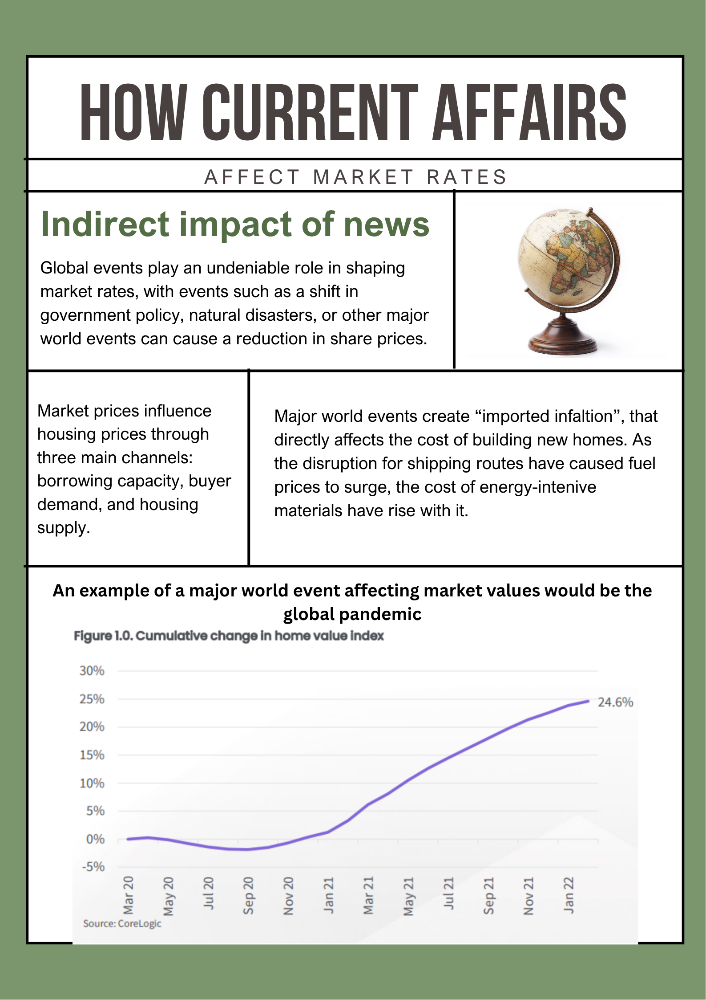

How Current Affairs Affect Market Rates

Historical and Modern Trends

This graph details the growing median house prices in capital cities across Australia, showing how unaffordable Sydney has become compared to all other states by a considerable margin.
Future Predictions
Sydney's median house price is forecast to continue rising, potentially reaching $2 million by late 2026 or 2027. The median house price is expected to rise by $102,200 across all combined Australian capital cities, whilst unit prices have been forecast to increase from $52,200 (as of September 2025) to $759,112 by the end of 2026. Most property experts are expecting a "grind higher" rather than a rapid boom, with annual growth rates settling between 5% and 7%. By 2030, the average house price is forecast to reach $2.4 million — nearly $1 million more than today — if the recent five-year pattern repeats.